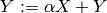
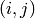

The Axpy interface¶
The Axpy interface is Elemental’s version of the PLAPACK Axpy interface, where Axpy is derived from the BLAS shorthand for  (Alpha X Plus Y). Rather than always requiring users to manually fill their distributed matrix, this interface provides a mechanism so that individual processes can independently submit local submatrices which will be automatically redistributed and added onto the global distributed matrix (this would be LOCAL_TO_GLOBAL mode). The interface also allows for the reverse: each process may asynchronously request arbitrary subset of the global distributed matrix (GLOBAL_TO_LOCAL mode).
Note
The catch is that, in order for this behavior to be possible, all of the processes that share a particular distributed matrix must synchronize at the beginning and end of the Axpy interface usage (these synchronizations correspond to the Attach and Detach member functions). The distributed matrix should not be manually modified between the Attach and Detach calls.
An example usage might be:
#include "elemental.hpp"
using namespace elem;
...
// Create an 8 x 8 distributed matrix over the given grid
DistMatrix<double,MC,MR> A( 8, 8, grid );
// Set every entry of A to zero
A.SetToZero();
// Print the original A
A.Print("Original distributed A");
// Open up a LOCAL_TO_GLOBAL interface to A
AxpyInterface<double> interface;
interface.Attach( LOCAL_TO_GLOBAL, A );
// If we are process 0, then create a 3 x 3 identity matrix, B,
// and Axpy it into the bottom-right of A (using alpha=2)
// NOTE: The bottom-right 3 x 3 submatrix starts at the (5,5)
// entry of A.
// NOTE: Every process is free to Axpy as many submatrices as they
// desire at this point.
if( grid.VCRank() == 0 )
{
Matrix<double> B( 3, 3 );
B.SetToIdentity();
interface.Axpy( 2.0, B, 5, 5 );
}
// Have all processes collectively detach from A
interface.Detach();
// Print the updated A
A.Print("Updated distributed A");
// Reattach to A, but in the GLOBAL_TO_LOCAL direction
interface.Attach( GLOBAL_TO_LOCAL, A );
// Have process 0 request a copy of the entire distributed matrix
//
// NOTE: Every process is free to Axpy as many submatrices as they
// desire at this point.
Matrix<double> C;
if( grid.VCRank() == 0 )
{
C.ResizeTo( 8, 8 );
C.SetToZero();
interface.Axpy( 1.0, C, 0, 0 );
}
// Collectively detach in order to finish filling process 0's request
interface.Detach();
// Process 0 can now locally print its copy of A
if( g.VCRank() == 0 )
C.Print("Process 0's local copy of A");
The output would be
Original distributed A
0 0 0 0 0 0 0 0
0 0 0 0 0 0 0 0
0 0 0 0 0 0 0 0
0 0 0 0 0 0 0 0
0 0 0 0 0 0 0 0
0 0 0 0 0 0 0 0
0 0 0 0 0 0 0 0
0 0 0 0 0 0 0 0
Updated distributed A
0 0 0 0 0 0 0 0
0 0 0 0 0 0 0 0
0 0 0 0 0 0 0 0
0 0 0 0 0 0 0 0
0 0 0 0 0 0 0 0
0 0 0 0 0 2 0 0
0 0 0 0 0 0 2 0
0 0 0 0 0 0 0 2
Process 0's local copy of A
0 0 0 0 0 0 0 0
0 0 0 0 0 0 0 0
0 0 0 0 0 0 0 0
0 0 0 0 0 0 0 0
0 0 0 0 0 0 0 0
0 0 0 0 0 2 0 0
0 0 0 0 0 0 2 0
0 0 0 0 0 0 0 2
- type AxpyType¶
An enum that can take on the value of either LOCAL_TO_GLOBAL or GLOBAL_TO_LOCAL, with the meanings described above.
- class AxpyInterface<T>¶
- AxpyInterface()¶
Initialize a blank instance of the interface class. It will need to later be attached to a distributed matrix before any Axpy’s can occur.
- AxpyInterface(AxpyType type, DistMatrix<T, MC, MR>& Z)¶
Initialize an interface to the distributed matrix Z, where type can be either LOCAL_TO_GLOBAL or GLOBAL_TO_LOCAL.
- AxpyInterface(AxpyType type, const DistMatrix<T, MC, MR>& Z)¶
Initialize an interface to the (unmodifiable) distributed matrix Z; since Z cannot be modified, the only sensical AxpyType is GLOBAL_TO_LOCAL. The AxpyType argument was kept in order to be consistent with the previous routine.
- void Attach(AxpyType type, DistMatrix<T, MC, MR>& Z)¶
Attach to the distributed matrix Z, where type can be either LOCAL_TO_GLOBAL or GLOBAL_TO_LOCAL.
- void Attach(AxpyType type, const DistMatrix<T, MC, MR>& Z)¶
Attach to the (unmodifiable) distributed matrix Z; as mentioned above, the only sensical value of type is GLOBAL_TO_LOCAL, but the AxpyType argument was kept for consistency.
- void Axpy(T alpha, Matrix<T>& Z, int i, int j)¶
If the interface was previously attached in the LOCAL_TO_GLOBAL direction, then the matrix \alpha Z will be added onto the associated distributed matrix starting at the  global index; otherwise
 times the submatrix of the associated distributed matrix,
which starts at index and is of the same size as Z, will
be added onto Z.
times the submatrix of the associated distributed matrix,
which starts at index and is of the same size as Z, will
be added onto Z.
- void Axpy(T alpha, const Matrix<T>& Z, int i, int j)¶
Same as above, but since Z is unmodifiable, the attachment must have been in the LOCAL_TO_GLOBAL direction.
- void Detach()¶
All processes collectively finish handling each others requests and then detach from the associated distributed matrix.